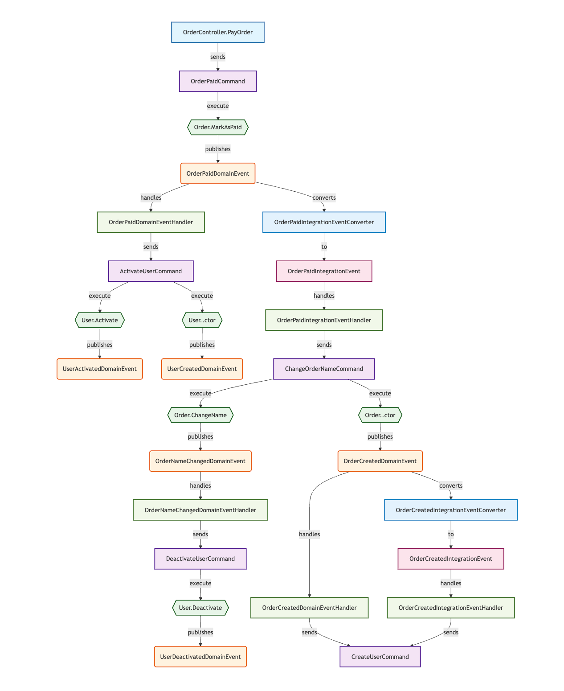

代码流分析 (Code Flow Analysis)¶
概述¶
NetCorePal.Extensions.CodeAnalysis 提供了强大的代码流分析功能，通过 CodeFlowAnalysisSourceGenerator 源生成器自动分析您的代码结构，帮助您理解 DDD 架构中各个组件之间的关系和数据流向。
功能特性¶
🔍 自动代码分析¶
- 命令发送者检测：自动识别控制器、端点、事件处理器等发送命令的类型
- 聚合根识别：检测实现了
IAggregateRoot接口的聚合根 - 命令识别：识别实现了
ICommand接口的命令类型 - 事件检测：自动发现领域事件和集成事件
- 处理器分析：识别各种事件处理器和转换器
🔄 关系映射¶
源生成器会自动建立以下关系：
- 方法到命令：发送命令的方法与对应命令的关系
- 命令到聚合方法：命令处理器调用聚合方法的关系
- 方法到领域事件：聚合方法发出领域事件的关系
- 领域事件到集成事件：通过转换器的转换关系
- 领域事件到处理器：领域事件与其处理器的关系
- 集成事件到处理器：集成事件与其处理器的关系
使用方法¶
1. 安装包¶
在所有需要分析的项目中添加以下包引用：
<PackageReference Include="NetCorePal.Extensions.CodeAnalysis" />
注意：
NetCorePal.Extensions.CodeAnalysis包已经包含了源生成器，无需单独安装源生成器包。确保在所有需要分析的项目中都添加此包引用。
2. 启用源生成器¶
源生成器会在编译时自动运行，无需额外配置。编译后会生成 CodeFlowAnalysisResult.g.cs 文件。
3. 访问分析结果¶
using System.Reflection;
using NetCorePal.Extensions.CodeAnalysis;
// 使用 AnalysisResultAggregator 静态类获取分析结果
// 需要传入包含要分析代码的程序集
var assemblies = new[] { Assembly.GetExecutingAssembly() }; // 或者其他需要分析的程序集
var result = AnalysisResultAggregator.Aggregate(assemblies);
// 访问各种组件信息
var controllers = result.Controllers;
var commands = result.Commands;
var entities = result.Entities;
var domainEvents = result.DomainEvents;
var relationships = result.Relationships;
说明：
Aggregate方法需要传入一个或多个程序集作为参数，这些程序集包含了需要分析的代码。您可以传入当前程序集、特定的业务程序集，或者项目中的多个程序集。
支持的代码模式¶
控制器和端点¶
// ASP.NET Core 控制器
[ApiController]
public class UserController : ControllerBase
{
public async Task<IActionResult> CreateUser([FromBody] CreateUserCommand command)
{
await _mediator.Send(command);
return Ok();
}
}
// FastEndpoints 端点
public class CreateUserEndpoint : Endpoint<CreateUserCommand>
{
public override async Task HandleAsync(CreateUserCommand command, CancellationToken ct)
{
await SendAsync(command, ct);
}
}
命令和处理器¶
// 命令
public record CreateUserCommand(string Name, string Email) : ICommand;
// 命令处理器
public class CreateUserCommandHandler : IRequestHandler<CreateUserCommand>
{
public async Task<Unit> Handle(CreateUserCommand request, CancellationToken cancellationToken)
{
var user = new User(request.Name, request.Email);
// 业务逻辑...
return Unit.Value;
}
}
聚合根和领域事件¶
// 聚合根
public class User : IAggregateRoot
{
public User(string name, string email)
{
Name = name;
Email = email;
AddDomainEvent(new UserCreatedDomainEvent(Id, name, email));
}
public void UpdateProfile(string name, string email)
{
Name = name;
Email = email;
AddDomainEvent(new UserUpdatedDomainEvent(Id, name, email));
}
}
// 领域事件
public record UserCreatedDomainEvent(Guid UserId, string Name, string Email) : IDomainEvent;
事件处理器和转换器¶
// 领域事件处理器
public class UserCreatedDomainEventHandler : IDomainEventHandler<UserCreatedDomainEvent>
{
public async Task HandleAsync(UserCreatedDomainEvent domainEvent, CancellationToken cancellationToken)
{
// 处理领域事件
await _mediator.Send(new SendWelcomeEmailCommand(domainEvent.UserId));
}
}
// 集成事件转换器
public class UserCreatedIntegrationEventConverter : IIntegrationEventConverter<UserCreatedDomainEvent, UserCreatedIntegrationEvent>
{
public UserCreatedIntegrationEvent Convert(UserCreatedDomainEvent domainEvent)
{
return new UserCreatedIntegrationEvent(domainEvent.UserId, domainEvent.Name, domainEvent.Email);
}
}
// 集成事件处理器
public class UserCreatedIntegrationEventHandler : IIntegrationEventHandler<UserCreatedIntegrationEvent>
{
public async Task Subscribe(UserCreatedIntegrationEvent integrationEvent, CancellationToken cancellationToken)
{
// 处理集成事件
await _mediator.Send(new SyncUserToExternalSystemCommand(integrationEvent.UserId));
}
}
生成的分析结果¶
数据结构¶
public class CodeFlowAnalysisResult
{
public List<ControllerInfo> Controllers { get; set; } = new();
public List<CommandInfo> Commands { get; set; } = new();
public List<EntityInfo> Entities { get; set; } = new();
public List<DomainEventInfo> DomainEvents { get; set; } = new();
public List<IntegrationEventInfo> IntegrationEvents { get; set; } = new();
public List<DomainEventHandlerInfo> DomainEventHandlers { get; set; } = new();
public List<IntegrationEventHandlerInfo> IntegrationEventHandlers { get; set; } = new();
public List<IntegrationEventConverterInfo> IntegrationEventConverters { get; set; } = new();
public List<RelationshipInfo> Relationships { get; set; } = new();
}
关系类型¶
MethodToCommand：方法到命令的关系CommandToAggregateMethod：命令到聚合方法的关系MethodToDomainEvent：方法到领域事件的关系DomainEventToIntegrationEvent：领域事件到集成事件的关系DomainEventToHandler：领域事件到处理器的关系IntegrationEventToHandler：集成事件到处理器的关系
可视化图表生成¶
框架提供了强大的 MermaidVisualizer 静态类，可以将分析结果转换为各种类型的 Mermaid 图表，帮助您直观地理解系统架构和数据流。
支持的图表类型¶
1. 完整架构流程图¶
生成包含所有组件和关系的完整架构图：
// 获取要分析的程序集
var assemblies = new[] { Assembly.GetExecutingAssembly() }; // 或者其他需要分析的程序集
var analysisResult = AnalysisResultAggregator.Aggregate(assemblies);
// 生成完整的架构流程图
var architectureChart = MermaidVisualizer.GenerateArchitectureFlowChart(analysisResult);
2. 命令流程图¶
专注于命令执行流程的流程图：
// 生成命令流程图
var commandChart = MermaidVisualizer.GenerateCommandFlowChart(analysisResult);
3. 事件流程图¶
专注于事件驱动流程的流程图：
// 生成事件流程图
var eventChart = MermaidVisualizer.GenerateEventFlowChart(analysisResult);
4. 类图¶
展示类型间关系的类图：
// 生成类图
var classDiagram = MermaidVisualizer.GenerateClassDiagram(analysisResult);
5. 命令链路图¶
以命令为中心的详细执行链路图：
// 生成命令链路图集合
var commandChains = MermaidVisualizer.GenerateCommandChainFlowCharts(analysisResult);
foreach (var (chainName, diagram) in commandChains)
{
Console.WriteLine($"链路: {chainName}");
Console.WriteLine(diagram);
}
6. 多链路综合图¶
在一张图中展示多个命令执行链路：
// 生成多链路综合图
var multiChainChart = MermaidVisualizer.GenerateMultiChainFlowChart(analysisResult);
效果展示：

7. 独立链路图集合¶
生成每个链路的独立图表：
// 生成所有独立链路图
var allChainCharts = MermaidVisualizer.GenerateAllChainFlowCharts(analysisResult);
效果展示：

图表特性¶
- 自动节点分类：不同类型的节点使用不同的形状和颜色
- 控制器：矩形，蓝色
- 命令：矩形，紫色
- 聚合根：菱形，绿色
- 领域事件：圆形，橙色
- 集成事件：矩形，粉色
- 事件处理器：矩形，浅绿色
-
转换器：梯形，蓝色
-
智能关系标注：不同类型的关系使用不同的箭头和标签
- 实线箭头：直接调用关系
- 虚线箭头：事件处理关系
-
粗实线箭头：重要业务流程
-
链路追踪：能够完整追踪从用户请求到业务执行的完整链路
交互式 HTML 可视化¶
框架提供了 GenerateVisualizationHtml 方法，可以生成一个完整的交互式 HTML 可视化页面，内置图表预览和导航功能。
HTML 可视化特性¶
- 交互式导航：左侧边栏提供树形导航，支持不同图表类型切换
- 实时渲染：内置 Mermaid.js 支持即时图表可视化
- 响应式设计：适配不同屏幕尺寸和设备
- 专业样式：清爽现代的界面，深色侧边栏搭配浅色内容区域
- 多语言支持：支持中英文界面
- 一键在线编辑：内置"View in Mermaid Live"按钮，支持一键跳转到 Mermaid Live Editor 进行在线编辑和分享
生成 HTML 可视化¶
using System.Reflection;
using NetCorePal.Extensions.CodeAnalysis;
public class HtmlVisualizationGenerator
{
public void GenerateVisualizationPage()
{
// 获取要分析的程序集
var assemblies = new[] { Assembly.GetExecutingAssembly() };
var analysisResult = AnalysisResultAggregator.Aggregate(assemblies);
// 生成完整的交互式 HTML 页面
var htmlContent = MermaidVisualizer.GenerateVisualizationHtml(analysisResult);
// 保存到文件
File.WriteAllText("visualization.html", htmlContent);
// 在浏览器中打开
Process.Start(new ProcessStartInfo("visualization.html") { UseShellExecute = true });
}
}
HTML 页面结构¶
生成的 HTML 页面包含：
- 侧边栏导航：
- 整体架构部分（完整架构流程图、类图）
- 专项流程部分（命令流程图、事件流程图）
- 命令链路部分（各个命令执行链路）
- 链路流程图（多链路综合视图）
-
单独链路流程图（每个链路的独立图表）
-
主内容区域：
- 动态图表标题和描述
- 交互式 Mermaid 图表渲染
- "View in Mermaid Live"按钮：每个图表右上角都有此按钮，点击可一键跳转到 Mermaid Live Editor
-
响应式布局，包含加载状态和错误处理
-
交互功能：
- 点击导航项切换不同图表
- 当前选中项的高亮状态
- 可展开/折叠的链路部分
- 显示链路数量的计数器徽章
示例 HTML 模板¶
您可以查看示例 HTML 可视化页面：MermaidDiagram.html
注意：该 HTML 文件包含交互式可视化功能，建议直接在浏览器中打开以获得最佳体验。文件包含了独立运行所需的所有 JavaScript 和 CSS 依赖。
自定义选项¶
生成的 HTML 包含：
- 现代 CSS 样式：清爽专业的外观，包含悬停效果
- Mermaid 配置：优化的主题和布局设置
- 错误处理：优雅的渲染错误处理
- 加载状态：用户友好的加载指示器
// 自定义可视化的示例
var analysisResult = AnalysisResultAggregator.Aggregate(assemblies);
var htmlContent = MermaidVisualizer.GenerateVisualizationHtml(analysisResult);
// 生成的 HTML 包含所有图表类型和交互功能
// 无需额外配置 - 只需保存并在浏览器中打开
File.WriteAllText("my-architecture-visualization.html", htmlContent);
浏览器兼容性¶
生成的 HTML 支持所有现代浏览器：
- Chrome/Edge 88+
- Firefox 85+
- Safari 14+
- 支持 JavaScript 的移动浏览器
在线图表预览功能¶
生成的 Mermaid 图表可以使用 Mermaid Live Editor 进行在线预览和编辑：
- 访问 Mermaid Live Editor：打开 https://mermaid.live/edit
- 粘贴图表代码：将生成的 Mermaid 代码粘贴到编辑器中
- 实时预览：右侧会实时显示图表的渲染效果
- 导出图片：可以将图表导出为 PNG、SVG 等格式
- 分享链接：可以生成分享链接，方便团队协作
使用步骤：
// 1. 生成 Mermaid 图表代码
var analysisResult = AnalysisResultAggregator.Aggregate(assemblies);
var mermaidCode = MermaidVisualizer.GenerateArchitectureFlowChart(analysisResult);
// 2. 打印或保存到文件
Console.WriteLine(mermaidCode);
File.WriteAllText("architecture.mmd", mermaidCode);
// 3. 复制代码到 https://mermaid.live/edit 进行预览
提示：上方展示的效果图正是通过 Mermaid Live Editor 生成的。您可以将框架生成的任何 Mermaid 代码粘贴到该工具中进行可视化预览。
一键在线编辑功能¶
为了进一步提升用户体验，生成的 HTML 可视化页面内置了**"View in Mermaid Live"按钮**，让您无需手动复制粘贴，一键跳转到 Mermaid Live Editor。
按钮特性¶
- 智能压缩：自动使用 pako 压缩算法优化 URL 长度，支持更大的图表
- 自动回退：如果 pako 压缩不可用，自动回退到 base64 编码
- 即时跳转：点击按钮立即在新标签页中打开 Mermaid Live Editor
- 完整图表：确保当前显示的图表完整传递到在线编辑器
- 错误处理：优雅处理网络错误和浏览器兼容性问题
使用方式¶
- 生成 HTML 可视化页面：
var analysisResult = AnalysisResultAggregator.Aggregate(assemblies);
var htmlContent = MermaidVisualizer.GenerateVisualizationHtml(analysisResult);
File.WriteAllText("visualization.html", htmlContent);
-
在浏览器中打开页面：浏览器中访问生成的 HTML 文件
-
选择要编辑的图表：通过左侧导航选择任意图表类型
-
点击"View in Mermaid Live"按钮：
- 按钮位于图表右上角
- 仅在有图表内容时显示
- 点击后自动在新标签页打开 Mermaid Live Editor
- 当前图表内容自动加载到编辑器中
支持的操作¶
在 Mermaid Live Editor 中，您可以：
- 实时编辑：修改图表定义，实时预览效果
- 导出图像：保存为 PNG、SVG、PDF 等格式
- 生成链接：创建分享链接，便于团队协作
- 复制代码：复制修改后的 Mermaid 代码
- 切换主题：选择不同的视觉主题
技术实现¶
- URL 编码优化：优先使用 pako 压缩减少 URL 长度
- 浏览器兼容性：支持所有现代浏览器
- 安全考虑：通过 URL 参数传递，无需额外权限
- 用户体验：按钮样式与整体界面保持一致
注意：此功能需要网络连接访问 Mermaid Live Editor。生成的图表数据通过 URL 参数传递，不涉及服务器存储。
ASP.NET Core 中间件集成¶
框架提供了 ASP.NET Core 中间件集成功能，可以在您的 Web 应用程序中内置代码分析图查看器，提供便捷的在线浏览体验。
中间件特性¶
- 零配置启用：一行代码即可在您的应用中启用代码分析图查看器
- 实时分析：自动分析当前应用程序集，无需预生成
- 开发环境专用：仅在开发环境中启用，生产环境自动禁用
- 统一入口：通过 Web 端点访问，与应用程序集成
- 响应式界面：现代化的 Web 界面，支持移动设备访问
快速开始¶
第一步：安装包¶
确保您的 ASP.NET Core 项目已经安装了代码分析包：
<PackageReference Include="NetCorePal.Extensions.CodeAnalysis" />
第二步：注册可视化端点¶
在 Program.cs 中添加代码分析可视化端点：
var builder = WebApplication.CreateBuilder(args);
// ...其他服务注册...
var app = builder.Build();
// 仅在开发环境中注册代码分析可视化端点
if (app.Environment.IsDevelopment())
{
app.MapGet("/diagnostics/code-analysis", () =>
{
// 从当前应用程序域聚合分析结果
var analysisResult = AnalysisResultAggregator.Aggregate(AppDomain.CurrentDomain.GetAssemblies());
// 生成完整的HTML可视化页面
var htmlContent = MermaidVisualizer.GenerateVisualizationHtml(
analysisResult,
"应用程序架构可视化");
return Results.Content(htmlContent, "text/html");
});
}
// ...其他中间件配置...
app.Run();
第三步：访问分析图¶
启动应用程序后，访问以下 URL：
https://localhost:5001/diagnostics/code-analysis
更多示例¶
更多使用示例请参考项目的测试代码和示例项目。